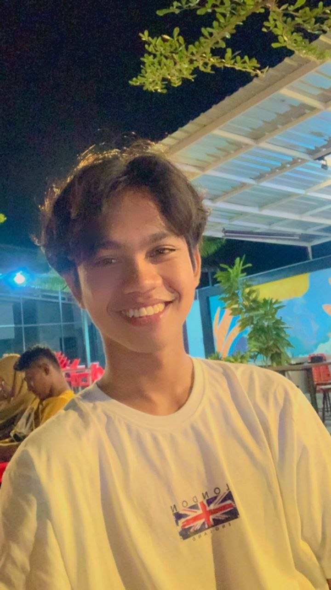

Hello, Saya
Building Digital Solutions with a Field-Tested Perspective
Lulusan baru Teknik Informatika dengan perpaduan unik antara keterampilan teknis dan pengalaman praktis di lapangan. Mulai dari pemrograman hingga survei lapangan dan distribusi logistik, saya membawa perspektif yang serba bisa dalam menghadapi setiap tantangan.

Saya adalah lulusan baru Teknik Informatika yang meyakini bahwa pembelajaran terbaik terjadi saat teori bertemu dengan tantangan dunia nyata. Lebih dari sekadar menulis kode, saya juga memiliki pengalaman terjun langsung ke lapangan—mulai dari mengelola distribusi bantuan pangan di Perum Bulog hingga menguasai teknik pengumpulan data sebagai surveyor terlatih.
Setiap pengalaman telah membentuk pola pikir saya: memiliki rasa ingin tahu yang tinggi, mudah beradaptasi, dan selalu bersemangat untuk belajar. Saya tidak sekadar membangun solusi—saya membangunnya dengan pemahaman mendalam mengenai masalah yang diselesaikannya.
Menyelesaikan pelatihan komprehensif mengenai metodologi survei, teknik pengumpulan data, dan standar pengukuran lapangan. Memperoleh pengalaman praktis dalam pengumpulan dan pelaporan data yang akurat..
Selalu terbuka terhadap peluang baru, proyek menarik, atau sekadar obrolan seru seputar teknologi..